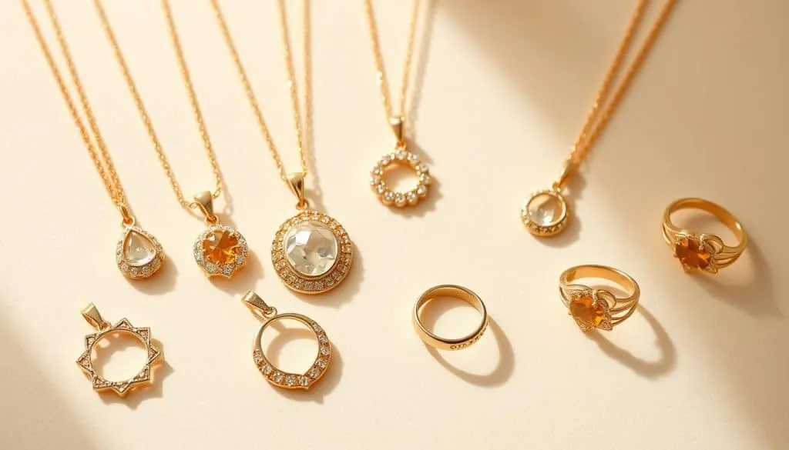

鍍金、包金與注金：一層皮能撐多久
都是「金色飾品」，鍍金幾個月就掉色，注金能戴十年——差別全在一層皮的厚度。

核心定義
「金色飾品」不等於「黃金飾品」：鍍金（plating）、包金（gold-filled）、注金（rolled gold）都是在基底金屬（銅、銀等）表面覆蓋一層黃金——差別在於鍍層厚度，從 0.5 微米到數十微米，壽命從幾個月到一輩子。
三者的關係可以一句話記住：鍍金是「噴了一層金粉」，包金/注金是「壓了一張金皮」——金皮越厚，越接近真金。
特徵與分類
| 工藝 | 金層厚度 | 金含量標記 | 壽命 | 價格 |
|---|---|---|---|---|
| 鍍金 | 0.5–3 微米 | 無（或 plating） | 數月至數年 | 低 |
| 注金/包金 | 5–40 微米（金重約 5%） | 1/20 14K GF 等 | 數年至數十年 | 中 |
| K 金實心 | 整體 K 金 | 14K/18K | 終身 | 高 |
關鍵知識：包金/注金（gold-filled）的法定含義是「黃金重量佔總重 1/20 以上」——印記如「1/20 14K GF」表示含金 5%、14K 品質。而鍍金沒有法定下限，很多「鍍金」其實只有一層肉眼難辨的薄膜。
科學原理
鍍金常用電鍍（electroplating）：把飾品浸入含金離子的電解液，通電後金離子在表面還原成金層——厚度以微米計，幾分鐘完成。包金/注金則用機械壓合：將金片與基底金屬在高溫高壓下滾壓結合，再裁切成型——金層與基底形成冶金鍵結，耐磨得多。
還有「鍍金+封層」的工藝：在鍍金層外加一層透明樹脂或銠——它能延緩磨損，但封層一旦破損，底下的鍍金層就開始剝落。這解釋了為什麼「鍍金首飾」的壽命差異可以很大。
鑑定與鑑別方法
- 找印記：GF/GF 1/20、14K GF、18K GF——包金注金有標記
- 看色澤：鍍金常偏黃亮、易出現「露銅」斑點
- 問厚度：鍍金必須問「厚度幾微米」
- 測試磨損：金層薄的鍍金，邊角最先露底（謹慎）
- 正名：行銷詞「鍍金」vs 法定詞「包金」不可混用
市場行情與保養建議
市場行情：鍍金飾品通常新台幣數百至數千元；包金/注金約為同款 K 金的 1/5–1/3；K 金則按金價+工費計算。2026 年的國際金價每盎司持續高檔，金飾成本中「金料」佔比極高。
提醒：網購「18K 鍍金」字樣常是文字遊戲——「18K 鍍金」指鍍層是 18K 金，不是「18K 金飾品」。買前看清標記與厚度。價格僅供參考，非投資建議。
常見誤區
三者金層厚度差幾十倍——鍍金以微米計、包金以「金重 5%」計。買之前先問「哪一種」。
「18K 鍍金」的意思是鍍層用 18K 金——整件飾品可能只有千分之一是黃金。18K 金飾品應直接標「18K」。
冷知識
古埃及人已懂得用「火法鍍金」——把金汞合金塗在銅器上加熱，汞蒸發後金留在表面。現代電鍍不過是它的工業版。
19 世紀美國規定含金量達 1/20 才能標 gold-filled——它是消費保護的早期產物，如今仍是品質象徵。
反直覺觀點
一層厚 10 微米的 14K 包金皮，比一層薄薄的 10K 鍍金耐磨得多——「金含量」與「耐用度」不是一回事。
鍍層是消耗品——它本來就會磨損。真正該問的是：它的設計壽命是幾個月，還是幾年？